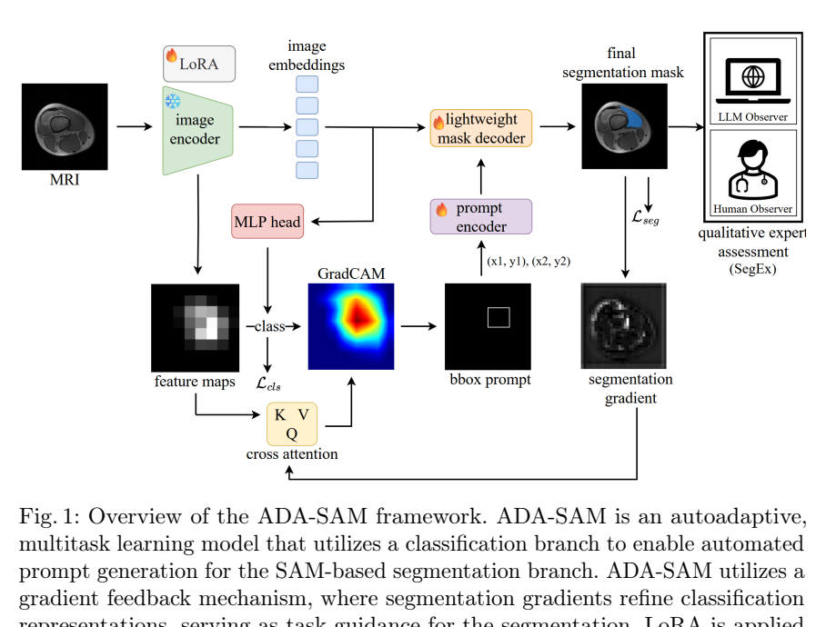

原论文流程图 · Figure 1 · PDF 第 3 页

Fig.1: Overview of the ADA-SAM framework. ADA-SAM is an autoadaptive, multitasklearningmodelthatutilizesaclassificationbranchtoenableautomated promptgenerationfortheSAM-basedsegmentationbranch.ADA-SAMutilizesa gradient feedback mechanism, where segmentation gradients refine classification 原文来源
论文面向膝关节损伤/术后康复中的股四头肌评估：股外侧肌（VL）与股内侧肌（VM）恢复不均衡与髌骨轨迹异常、ACL 移植物受力及创伤后骨关节炎相关，而临床评估多依赖手动力量测试和主观量表，缺少客观的影像量化手段 [p. 1]。深度学习分割（U-Net 及变体）虽可用于肌肉勾画，但需要大量逐切片人工标注，在康复临床试验中难以获得 [p. 2]。作者因此希望构建一种标注高效、无需人工提示、可自动适配医学域的分割框架，并同时利用未标注切片 [p. 2]。
作者认为现有方法不足在于：全监督模型依赖大量标签；普通半监督方法未利用任务间结构先验；SAM 类模型通常需要人工点/框提示，且直接微调参数量大、易过拟合 [p. 2, p. 4]。
ADA-SAM 是双分支多任务框架（图 1，[p. 3]）：分类分支对输入 MRI 切片预测类别，并生成 GradCAM；分割分支以 SAM 为骨干，用分类分支产生的边界框作为提示，输出 VL/VM 掩码。分割梯度回传以更新共享/分类特征，形成“自提示—自反馈—自纠正”的闭环 [p. 3, p. 4]。
设输入切片 x，分类分支输出类别概率 p∈[0,1]^C，取 c=argmax p；生成类激活图 M_CAM∈R^{H×W}，以阈值 τ 提取显著像素，其外接边界框 (x_min,y_min,x_max,y_max) 作为 SAM 提示 B [p. 4]。SAM 图像编码器得到特征 F(x)，提示编码器将 B 编码为 P(B)，掩码解码器据此预测分割 [p. 4]。论文未报告阈值 τ 的具体取值。
SAM 编码器参数量大，作者采用 LoRA：在 transformer 注意力层引入低秩矩阵 A、B，秩 r=8，以少量可训练参数实现域适配 [p. 4]。消融显示 r=8 时 DSC 0.91，r=2/4/6 分别为 0.84/0.85/0.86；r=8 使参数量降至 26M（原 ViT-B checkpoint 为 91M）[p. 8]。
仅部分切片带分割标签；选择时优先保证每类至少一个样本，其余随机抽取至目标数量 [p. 4]。分类标签由掩码构造：C={max(y_i)}，y_i∈{0,1,2,3}^{256×256}，即由切片中出现的最大类别号定义切片类别 [p. 3]。这一构造意味着含双肌肉的切片只保留一个类标签，论文未讨论其影响。
分类使用 Focal loss：L_cls=−Σ_c α_c(1−p_{t,c})^γ k_c log(p_{t,c})，其中 C 为类别数，k_c 为 one-hot 真值，p_{t,c} 为预测概率，γ 为类别相关权重因子 [p. 5, 式(1)]。分割使用 Dice loss：L_seg=1−2Σ_i ŷ_i y_i/(Σ_i ŷ_i+Σ_i y_i) [p. 5, 式(2)]。总目标 L_mtl=L_cls+γL_seg，γ 为平衡权重 [p. 5]。注意论文在 Focal loss 与总损失中重复使用符号 γ，且未给出具体数值，存在符号歧义。
SegEx 是视觉图灵测试：由领域专家确定 MQ、MB、CN、SD、DC 五项标准（表 1，[p. 6]），其中 MQ/MB/SD/DC 为 1–4 分（1 最好），CN 为 0/1 二值；各指标标准化到共同区间后取平均 E_avg=(1/k)Σê_i [p. 5]。人类观察者为两名不同资历者，GT 与预测掩码随机混合、随机顺序、无交流 [p. 5]。LLM 观察者使用 GPT-4o，仅输入掩码以避免隐私问题，且不评 ED 指标（该指标依赖私有生物信息数据）[p. 5]。
作者声称的贡献包括：新型自提示、自反馈、自纠正分割模型 ADA-SAM；结合领域专家与 LLM 的定性评估 SegEx；含 VL/VM 多类标注的 21 序列 Turbo Spin Echo MRI 数据集；以及在少至 5 个标注切片时仍表现良好 [p. 2]。
我的解读：核心新颖点是把分类 CAM 当作 SAM 的自动提示源，并用分割梯度反向影响分类表示，从而把“提示生成”和“任务引导”合并为一个可学习闭环；LoRA 主要解决计算与过拟合问题，属于工程适配而非概念创新。SegEx 的 LLM 评估在方法上较新，但其证据强度受限于样本量（3 个 3D 扫描）和指标设计。
数据来自髌骨不稳患者（BRAINS 试验）[p. 5]。Turbo Spin Echo MRI，65 个切片堆栈，FOV 192×192 mm，采集矩阵 256×256，层厚 6 mm，体素 0.75×0.75×6 mm；21 名患者按 15/1/5 划分为训练/验证/测试，分别 975/65/325 切片 [p. 6]。
基线包括全监督 UNet、UNet++、Trans-UNet、nnU-Net、Swin-Unet、MedSAM、SAM-Mix，以及半监督多任务 UMTL、UMTL++、nnUMTL、SAM-Mix、SAM-PP [p. 6, 表 2]。非 SAM 基线训练 25 epoch，ADA-SAM 仅 10 epoch [p. 6]。硬件为 Intel Xeon w7-2475X、双 NVIDIA A4000（32GB）[p. 6]。指标为 Dice 系数（DSC），每个模型运行 5 次报告均值（标准差）[p. 7]。
表 2 的排版在提供的文本中严重错位，部分数字无法可靠对应到行列，以下仅列出可辨认且与正文一致的结果。
半监督设置：5 个标注切片时，ADA-SAM 总体 DSC 0.91，SAM-Mix 0.77，SAM-PP 0.51，nnUMTL 0.28，UMTL++ 0.21，UMTL 0.19；作者称比第三名高 31% [p. 7]。50 切片时 ADA-SAM 总体 0.95，SAM-Mix 0.91，nnU-Net 0.81 [p. 7]。100 切片时 ADA-SAM 总体 0.92，SAM-Mix 0.90，nnU-Net 0.86 [p. 7]。注意 100 切片结果低于 50 切片，论文未解释该非单调现象。
全监督设置：5 切片时 ADA-SAM 总体 0.92，MedSAM 0.89，nnU-Net 0.77，Swin-Unet 0.61；100 切片时 ADA-SAM 0.92，MedSAM 0.90，nnU-Net 0.86 [p. 7]。作者称全监督下 ADA-SAM 有竞争力但不超越基线，然而表中 5 切片全监督 ADA-SAM（0.92）高于 nnU-Net（0.77）等，与“不超越”的表述存在张力；且“0 切片”行中 ADA-SAM 仍有 0.89，其含义（是否指无分割标签但用分类标签/预训练）论文未说明 [p. 7]。
LoRA 秩消融：r=2/4/6/8 对应 DSC 0.84/0.85/0.86/0.91，r=8 最优，参数量 26M vs 原 91M [p. 8]。推理时间约 132 ms/图，SAM-Mix 约 150 ms/图（含 I/O）[p. 8]。论文未报告分类分支精度、提示框质量或去掉梯度反馈的消融，因此“梯度反馈带来增益”缺少直接证据。
表 3 报告 3 个 3D 测试扫描的逐切片平均分 [p. 6, p. 8]。VM：GT 在观察者 1/2/LLM 下为 1.44/1.54/2.82，预测为 1.48/1.42/2.77；VL：GT 为 1.24/1.36/2.76，预测为 2.39/1.98/2.71 [p. 8]。即 VM 预测与 GT 接近，VL 预测在两名人类观察者下明显差于 GT（2.39 vs 1.24；1.98 vs 1.36），LLM 观察者则几乎无差异。作者称 VM 评分更高可能因其体积小、形状简单，并称部分评估者认为 ADA-SAM 的 VM 掩码优于 GT [p. 7–8]。该说法与表中 VM 预测略差于 GT 的数值不完全一致，应视为作者解释而非确证结论。
图 2 展示半监督 ADA-SAM 与 nnU-Net、Swin-Unet 的定性对比，作者称 ADA-SAM 改善了单肌肉切片的欠分割以及双肌肉切片的欠/过分割 [p. 7–8]。由于未提供图像本身，此处仅转述作者描述。
支持的结论：在 5/50/100 标注切片设置下，ADA-SAM 的 DSC 高于所列半监督多任务基线，且 5 切片时优势明显（0.91 vs 0.77）[p. 7]；LoRA r=8 优于更小秩 [p. 8]；推理速度略快于 SAM-Mix [p. 8]。
局限与缺失证据：第一，表 2 排版错乱，部分行列对应关系无法辨认，不能据此复核所有数字；第二，缺少分类分支消融、无梯度反馈消融、提示阈值 τ 敏感性分析，因而无法分离各组件贡献；第三，100 切片结果低于 50 切片，未解释；第四，SegEx 仅 3 个扫描、2 名人类观察者和 1 个 LLM，统计效力有限，且 VL 的人类评分显示预测明显劣于 GT，与“临床可用”的总体主张存在差距 [p. 8]；第五，论文未报告分类准确率、校准或失败案例；第六，数据仅来自单一中心、单一序列、21 名患者，泛化性证据有限。
已报告：数据划分 15/1/5（975/65/325 切片）；输入 256×256；SAM ViT-B 骨干 + LoRA r=8；分类 Focal loss + 分割 Dice loss，总损失 L_cls+γL_seg；ADA-SAM 训练 10 epoch，基线 25 epoch；5 次运行取均值；DSC 评价；双 A4000 GPU；代码链接 https://github.com/tbwa233/ADA-SAM [p. 4–8]。
未报告：学习率、优化器、batch size、数据增强、Focal loss 的 α/γ 具体值、总损失权重 γ、CAM 阈值 τ、LoRA 应用的具体层、分类分支架构与初始化、半监督中未标注数据的使用方式（是否仅用于分类或一致性正则）、推理时是否使用测试时增强。复现前需向作者或代码库确认这些细节。
本篇未找到可可靠提取的方法流程图，请查看原文 PDF。
半监督医学图像分割（SSMIS）普遍采用“弱-强一致性”范式：对未标注图像做弱增强得到伪标签，监督其强增强视图，从而把决策边界推向低密度区域 [p. 1]。作者指出该框架本身存在两个被忽视的缺陷：
作者的经验观察是：标注与未标注数据的分布差异体现在像素强度的一阶与二阶统计矩（对应亮度与对比度）上，且在标注数据少时更明显、跨类别不同（Fig. 1(c-d)，[p. 1]）。这构成 SDB 模块的直接动机。
数据集含小规模标注子集 D_l={(X_l,Y_l)} 与大规模未标注子集 D_u={X_u}，M≫N [p. 2]。整体遵循 Mean Teacher 范式，含标注分支与未标注分支，并加入 SDB 与原型交叉对比（Fig. 2，[p. 3]）。
标注分支：X_l 先经弱增强 A_w，再经 SDB 与未标注图像混合得到 X_lm，送入学生网络 f_θ 得预测 P_l；监督损失为交叉熵与 Dice 的组合：L_sup = ½[L_ce(P_l,Y_l)+L_dice(P_l,Y_l)]（式1，[p. 2]）。
未标注分支：教师模型对弱增强视图 A_w(X_u) 输出 P_uw 作为伪标签，监督学生对强增强视图 A_s(X_u) 的预测 P_us。无监督目标为 L_unsup = α·L_dice(P_us, argmax_c (P_uw)_c) + β·L_ctr（式2，[p. 2]）。
总目标：L = L_sup + λ(t)·L_unsup（式3），λ(t) 为高斯 ramp-up 函数 [p. 2]。
对标注与未标注批次中每个样本，按通道/空间计算风格表示（均值与标准差）：(μ,σ) = (E[X], sqrt(E[(X−μ*)²]+ε))（式4，[p. 2]）。随机采样一个未标注风格 (μ_u,σ_u)，将其应用于标注内容：
X_lm = η·X_l + (1−η)·[(X_l−μ_l)/σ_l·σ_u + μ_u]（式5，[p. 2]）。
η 控制标注与未标注风格的相对贡献。由于标注数据风格多样性有限且为避免信息损失，混合后的标注批次直接送入模型训练，不再做额外处理 [p. 3]。
置信度引导的原型估计：对未标注图像 X_u 的弱/强视图，计算特征 Z_v = q(f_θ(A_v(X_u))) ∈ R^{D×H×W} 与概率图 P_v = softmax(h(f_θ(A_v(X_u)))) ∈ R^{C×H×W}，v∈{w,s}（式6-7，[p. 3]）。类别原型由置信度加权特征聚合得到：P̃_vc = E[P_vc ⊙ Z_v] / E[P_vc]（式8，[p. 3]）。为缓解单批次原型偏差（类别缺失、批大小有限、各类学习进度不均），采用大小 K 的 FIFO 记忆库缓存历史原型，最终原型为按批次置信度加权的历史原型平均（式9，[p. 3]）。
交叉对比损失：弱视图像素特征被拉向强视图类别原型、远离不相似原型，反之亦然：
L_ctr = (1/2)Σ_{v∈{w,s}} Σ_{i,j} −log[ exp(sim(Z_vi,j, P̄_vŶ_vi,j)/τ) / Σ_c exp(sim(Z_vi,j, P̄_vc)/τ) ]（式10，[p. 4]）。
其中 τ 为温度超参，Ŷ_vi,j 为 EMA 更新教师 f̄_θ 的预测，更新式 θ̄←γ·θ̄+(1−γ)·θ，γ=0.99 [p. 4]。
作者主张：(1) 识别出弱-强一致性框架中数据流分离与监督信息利用不完整两个缺陷；(2) 提出基于统计矩的风格引导分布混合模块以桥接标注/未标注数据流；(3) 提出基于原型的交叉对比策略，同时利用弱到强与强到弱预测并抑制噪声；(4) 在多个基准、多种半监督设置下取得竞争性/最优结果 [p. 1-2, p. 6]。
我的解读：SDB 本质是 AdaIN 式风格迁移在标注-未标注流间的应用，其新颖性在于将“分布差异可由一阶/二阶矩刻画”这一经验观察转化为显式的数据混合干预；交叉对比的核心贡献是把原型对比从单向（弱监督强）扩展为双向，并用置信度加权与记忆库稳定原型。二者组合的收益在消融中可分解，但 SDB 与 L_ctr 的交互效应是否超线性，论文未做深入分析。
Synapse（Table I，[p. 4]）：10% 设置下 Ours(BCP) 平均 DSC 66.59%、ASD 23.52；Ours(MT) 65.81%/15.88。5% 设置下 Ours(BCP) 61.87%/18.81，Ours(MT) 60.00%/19.73。作者称 BCP 扩展框架相对 BCP 的平均 DSC 增益为 18.78%（5%）与 14.82%（10%），并在胃（+20.12%、+19.92%）等困难器官上提升显著 [p. 5]。需注意：Table I 中部分单元格排版错乱（如 AD-MT 的 KL 列 80.36 与 72.67 位置异常、Ours(BCP) 10% 的 GB 列缺失），这些数字的可读性存疑，不应据此做精细比较。
ACDC（Table II，[p. 4]）：5% 设置下 Ours(BCP) 88.60%/0.61，Ours(MT) 87.31%/1.10；10% 设置下 Ours(BCP) 89.80%/0.95，Ours(MT) 89.27%/0.63。作者称 5% 下较 BCP 提升 1.01%、较 MCSC 提升 13.71%，10% 下较 SCP-Net 提升 1.1% [p. 5]。
定性结果：Fig. 3 显示在 ACDC 上对右心室的欠/过分割更平衡、边界更精确；在 Synapse 上对主动脉、肝脏及胰腺的分割更可靠 [p. 5]。
组件消融（Table III，[p. 5]）：基线 DSC 为 Synapse 55.78%、ACDC 85.84%。加 SDB 后 Synapse 62.11%/19.28、ACDC 87.91%/1.04；仅加 L_ctr 为 61.28%/23.03 与 87.77%/0.99；SDB+L_ctr 为 64.23%/17.36 与 88.38%/0.97；再加记忆库 MB 达 65.81%/15.88 与 89.27%/0.63。相对基线的绝对 DSC 增益为 10.03%（Synapse）与 3.43%（ACDC）[p. 5]。
交叉对比损失分解（Table IV，[p. 5]）：在含 SDB 的前提下，仅加 L_spixel（强到弱 Dice）使 DSC 从 62.11 降至 61.29、ASD 从 19.28 升至 24.56（DSC −0.82%、ASD +5.28mm），说明直接用含噪强预测做像素级监督有害；单独加 L_wctr 为 62.35%/16.34，单独加 L_sctr 为 62.14%/21.32，二者组合达 65.81%/15.88，支持双向对比一致性的互补性 [p. 5]。
有支持的结论：(1) SDB 与 L_ctr 各自带来增益，组合后进一步提升，消融数据支持这一分解；(2) 强到弱像素级 Dice 监督有害、而双向原型对比有益，Table IV 提供了较清晰的对照；(3) 在两个数据集、两种标注比例下均报告了优于所列基线的平均 DSC。
局限与缺失证据：(1) 论文仅 6 页，未报告参数量、推理开销、多次运行的均值/方差或显著性检验，单次结果难以判断稳定性；(2) 未与更多近期方法（如 PH-Net、Density-guided 等被引工作）直接比较；(3) SDB 中 η 的分布、风格采样策略对结果的影响未做消融；(4) 记忆库大小 K 仅设为 128，未报告 K 的敏感性；(5) Table I 存在排版/数字错位，部分单元格无法可靠辨认；(6) 定性分析仅基于 Fig. 3 的少量示例，未量化边界误差。
本篇未找到可可靠提取的方法流程图，请查看原文 PDF。
论文关注医学图像分割中“标注稀缺”与“域偏移”同时出现的现实问题，试图用一个统一框架覆盖三类任务：半监督医学图像分割（SSMIS）、无监督医学域适应（UMDA）和半监督医学域泛化（Semi-MDG）[p. 1]。作者指出，现有方法通常针对单一任务定制，在跨域场景下性能下降；已有统一尝试如AIDE和A&D虽覆盖多任务，但在UMDA/Semi-MDG上的提升相对有限[p. 1]。作者将原因归结为两点：(1) 域偏移下伪标签不可靠，导致误差累积与模型崩溃；(2) 数据内在结构（体素级关系、空间上下文）未被充分利用[p. 1]。因此，方法设计围绕“可靠且多样的伪标签”与“多层次一致性/结构约束”展开。
训练数据由N_L个有标注样本D_l={(x_i,y_i)}和N_U个无标注样本D_u={x_i}组成，x_i为L×W×H体数据，y_i含Y类[p. 3]。网络含共享编码器E(x_l,x_u;ξ)与三个解码器：V-Net解码器D(x_l;ψ)（有标注分支）、扩散解码器D(x_l,x_u;ξ)（域不变特征分支）、V-Net解码器D(x_u;θ)（无标注学生分支）；学生分支另有EMA均值教师E(·;ξ_T)、D(·;θ_T)[p. 3]。推理时仅用D(x_u;θ)[p. 3, Fig. 1]。
遵循Diff-UNet与A&D，将标签one-hot化后加噪：y_t=√ᾱ_t y_0+√(1−ᾱ_t)ε，ε~N(0,1)[p. 3, Eq.1]。扩散编码器以concat([y_t,x_l])和时间步为输入，输出多尺度特征h_{l;ξ}^i，由D(x_l;ξ)预测清晰标签，损失L_diff为Dice+CE组合[p. 3-4, Eq.2]。有标注分支D(x_l;ψ)仅输入x_l，损失L_sup对多尺度输出逐层计算DiceCE[p. 4, Eq.3]。
第一教师：扩散分支迭代t次DDIM得到p_{u;ξ}；D(x_l;ψ)停梯度前向得到p_{u;ψ}。作者发现p_{u;ψ}过于稀疏、置信度过高，会压制p_{u;ξ}且对噪声不稳健，故对p_{u;ψ}做Gumbel-Softmax重参数化并加高斯模糊，最终p_{t1}=0.5·(Gumbel-Softmax(p_{u;ξ})+Softmax(p_{u;ψ}))[p. 4, Eq.4]。第二教师为EMA均值教师，p_{t2}=Softmax(p_{u;θ_T})，更新规则ξ_T=γξ_T+(1−γ)ξ，θ_T=γθ_T+(1−γ)θ[p. 4]。
集成：计算两教师预测熵H_{t1}、H_{t2}，权重w1=e^{−H_{t1}}、w2=e^{−H_{t2}}，集成预测p_{ti}=(w1 q_{t1i}+w2 q_{t2i})/(w1+w2)，伪标签y_t=argmax(p_{ti})，学生损失L_u为DiceCE[p. 4, Eq.5-7]。
全局：跨集CutMix，随机3D二值掩码M，x_mix=(1−M)⊙x_i+M⊙x_j，y_t,mix同理，x_i∈D_u、x_j∈D_l∪D_u，损失L_mix[p. 4, Eq.8-9]。局部：掩码图像建模，按patch均匀采样掩码M（patch大小b、掩码率r），x_i,mask=M⊙x_i，损失L_mic[p. 4-5, Eq.10-11]。
针对硬伪标签噪声，用软Dice损失L_sdice将D(x_l;ψ)与D(x_l,x_u;ξ)的预测蒸馏到学生：L_kd=mean[L_sdice(p_{u;θ},p_{u;ξ})+L_sdice(p_{u;θ},p_{u;ψ})][p. 5, Eq.12]。掩码重建则最小化学生掩码输入logits与均值教师原始输入logits的L2差异：L_rec=mean(‖p_{u,l,mask}^{θ}−p_{u,l}^{θ_T}‖²/‖p_{u,l}^{θ_T}‖²)[p. 5, Eq.13]。
编码器后经线性层得特征e1,e2∈R^{D×LHW}，相关图C=Softmax(e1^T·e2)/√D，C∈R^{LHW×LHW}[p. 5, Eq.14]。将C乘到学生logits得p_{u;θ,corr}=D(E(x_u;ξ);θ)·C，相关损失L_corr=L_u_corr+L_l_corr[p. 5, Eq.15-17]。
L=L_diff+L_sup+L_mix+αL_mic+βL_kd+γL_rec+ηL_corr[p. 5, Eq.18]。
作者声称的贡献包括：统一框架覆盖SSMIS/UMDA/Semi-MDG；双教师熵集成策略降低确认偏差；分层一致性机制（CutMix+掩码、标签传播、蒸馏与重建）[p. 2]。我的解读：核心增量在于把A&D的解耦扩散架构与均值教师、熵加权集成、体素相关传播组合起来；单看每个组件多为已有技术（CutMix、MIM、知识蒸馏、非局部相关），创新更多体现在组合与跨任务验证上。
五个数据集：LA、Synapse、AMOS（SSMIS）、MMWHS（UMDA）、M&Ms（Semi-MDG）[p. 5]。指标为Dice、ASD，SSMIS另加Jaccard、95HD[p. 5]。PyTorch 1.12.1，单张A100；SGD+多项式调度，lr=lr_init·(1−i/I)^0.9，300 epoch，batch size 4（2标注+2无标注）；掩码率0.5（LA为0.7），block大小为图像尺寸1/16[p. 5]。各数据集patch size、学习率与α/β/γ/η见Table I：LA 112×112×80、lr 1e-2、α2.0/β0.1/γ0.2/η1.2；Synapse与AMOS 64×128×128、lr 3e-2、α0.1/β0.2/γ0.5/η1.0（AMOS η1.3）；MMWHS 128×128×128、lr 5e-3、α1.0/β0.1/γ0.1/η0.9；M&Ms 32×128×128、lr 1e-2、α1.0/β0.1/γ0.1/η1.0[p. 6, Table I]。
LA 5%标签：Dice 91.63%、Jaccard 84.59%、95HD 4.40、ASD 1.41，较次优A&D提升1.70/2.77/0.85/0.36，并超全监督V-Net（91.47%）0.16%[p. 6, Table II]。LA 10%：Dice 92.43%、ASD 1.30，较GapMatch提升1.43%和0.16[p. 6]。Synapse 20%标签：平均Dice 66.01%±0.43、ASD 1.69±0.79，较前方法提升5.13% Dice[p. 6-7, Table III]；10%标签结果见Table IV，正文未逐项复述[p. 7]。AMOS 2%标签：Dice较次优AllSpark高8.79%、ASD低4.07[p. 6, Table V]。
MMWHS MR→CT：Dice 92.1%，超全监督90.9%达1.2%；CT→MR：Dice 83.4%，低于全监督0.2%，较DDSP高3.1%（92.1 vs 89.0；83.4 vs 81.9），较A&D高12.0%（83.4 vs 71.4）[p. 7, Table VI]。M&Ms 2%/5%标签：平均Dice 85.46%/86.22%，较EPL高0.94%/0.5%，较BCP高9.81%/9.17%，较A&D高4.15%/2.91%[p. 7-8, Table VII]。
LA 5%：基线90.35，加L_mic后90.94，加L_kd 90.73，加L_rec 91.16，全量91.63[p. 8, Table VIII]。LA 10%：全量92.43[p. 8]。Synapse 20%：基线64.58±1.17，逐步加入各损失至65.45±0.12，全量66.01±0.43[p. 8, Table IX]。多样教学消融：LA 5%与Synapse 20%上，双教师集成较单教师约提升2% Dice（Synapse）[p. 9, Table X]。超参敏感性：α=0.1、γ=0.2较优，γ过小硬伪标签噪声大、过大软预测噪声大，Dice波动较小[p. 9, Fig. 4]。掩码率消融：Synapse 20%下r=0.5时Dice 90.80、ASD 1.60，r=0.4/0.6略低[p. 9, Table XI]。
支持的结论：五个数据集、三类任务上均报告了正向结果，消融显示各组件单独加入均有增益，双教师集成在Synapse上约+2% Dice有明确证据[p. 9]。局限与缺失：部分表格（Table III、IV、V、VII、X）在提供的文本中排版错乱，具体逐类数字难以完整辨认，只能依赖正文引用的汇总数字；未报告多次运行的方差（除Synapse 20%与部分消融外），统计显著性未讨论；超参按数据集手工设定，跨数据集迁移成本未评估；标签传播的C矩阵为LHW×LHW，计算/显存开销未报告；与AIDE等统一方法的直接比较在正文中缺失。作者未设独立局限性章节。
已报告：PyTorch 1.12.1、单A100、SGD+多项式调度（指数0.9）、300 epoch、batch 4（2标注+2无标注）、各数据集patch size/学习率/掩码率/α/β/γ/η（Table I）、掩码block为图像尺寸1/16、LA掩码率0.7其余0.5[p. 5-6]。未报告：扩散步数t的具体值、DDIM采样步数、EMA衰减γ的具体值、Gumbel-Softmax温度、高斯模糊核大小、优化器动量/权重衰减、数据预处理与划分细节、随机种子与重复次数（除注明3次重复的Table III）、代码/模型是否公开。复现时应先按Table I配置，再对未报告项做敏感性扫描。